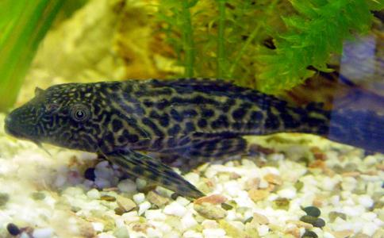

我是一名动物保护者，很赞成
巴西龟特征：巴西红耳龟因其头顶后部两侧有2条红色粗条纹，故得名。红耳龟在市面上更经常被叫做巴西龟，大多数种类产于巴西，个别种产于美国的密西西比河。巴西龟是世界公认的生态杀手，已经巴西彩龟的头部宽大，吻钝，头颈处具有黄绿相镶的纵条纹，眼后有一对红色条纹。俗称巴西龟、巴西彩龟、翠龟、麻将龟、秀丽锦龟、七彩龟、彩龟。
被世界环境保护组织列为100多个最具破坏性的物种之一，多个国家已将其列为危险性外来入侵物种！中国也已将其列入外来入侵物种，对中国自然环境的破坏难以估量。由于巴西龟整体繁殖力强，存活率高，觅食、抢夺食物能力强于任何中国本土龟种！如果把它放生后，因基本没有天敌且数量众多，大肆侵蚀生态资源，将严重威胁中国本土野生龟与类似物种的生存。
而且在只要适于生存的旅游景点加上民众积极的放生基本上都可看到满塘皆是巴西龟的震撼景象！虽然巴西龟
大鳄龟
小鳄龟
鳄龟为美洲物种，生性凶猛，放生到当地会大量捕杀鱼类和其他龟类，快速成长，成体鳄龟还可能攻击人类，造成当地物种灭绝
大鳄龟特征：真鳄龟长相酷似鳄鱼，集龟和鳄鱼于一体，故称真鳄龟。其头部较粗大，不能完全缩入壳内，脖子短而粗壮，领背长有褐色肉刺，眼细小，嘴巴上下颌较小，吻尖，尾巴尖而长，两边具棱，棱上长有肉突刺，尾背前边三分之二处有一条鳞皮状隆起棱背，并呈锯齿口状，背壳很薄，上皮以棕褐色为主，偶尔棕黄色，背部具有三条模糊棱，并有放射状斑纹，后缘呈齿状，腹部白色，偶有小黑斑点，幼时黑色，四肢粗壮，肌肉发达，爪子尖而有力，善于爬行。
小鳄龟特征：鳄龟上颌似钩状，但钩小，触须仅有少量，背甲棕黄色或黑褐色，有3条纵行棱脊，肋盾略隆起，随着时间推移棱脊逐渐磨耗。腹甲灰白色，无上缘盾，尾略短，最显著的特征是尾的背面有一锯齿形脊，又称尾棘。
牛蛙特征：体形与一般蛙相同，但个体较大，雌蛙体长达20厘米，雄蛙18厘米，最大个体可达2千克以上。头部宽扁。口端位，吻端尖圆面钝。眼球外突，分上下两部分，下眼皮上有一个可折绉的瞬膜，可将眼闭合。背部略粗糙，有细微的肤棱。四肢粗壮，前肢短，无蹼。雄性个体第一趾内侧有一明显的灰色瘤状突起。后肢较长大，趾间有蹼。肤色随着
放生牛蛙的危害：美国牛蛙原产于北美东部，但现在已经被引入全世界各地，并危害生存于低地的赤蛙族群。牛蛙成蛙会捕食其他蛙类，蝌蚪也会捕食其他原生蛙类的蝌蚪，牛蛙蝌蚪期可长达1-3年，所以对其他蛙类蝌蚪的影响相当大。牛蛙成蛙会捕食其他蛙类，蝌蚪也会捕食其他原生蛙类的蝌蚪，牛蛙蝌蚪期可长达1-3年，所以对其他蛙类蝌蚪的影响相当大。栖息地的破坏经常在牛蛙的危害扮演加成的作用，尤其将大片、暂时性、浅水的湿地改变成养殖鱼类的小池塘时，不仅有利牛蛙繁殖，原生蛙类的成蛙及蝌蚪也因为躲藏的草泽环境减少，增加被牛蛙及鱼类捕食的机会。
“四大家鱼”（青、草、鲢、鳙）在云南、青海、新疆地区也是不能放生的。
云南是我国鱼类种类最为丰富的省份，然而从20世纪60年代起，人们出于产业经济的目的，两次大规模地移殖和引进外地鱼类。第一次是在1963-1970年间引进“四大家鱼“等经济性鱼类，并带进麦穗鱼和〔xia〕虎鱼等非经济性鱼类；第二次较大规模的引进是在1982-1983年，把太湖新银鱼和间下〔zhen〕鱼等引进滇池、星云湖等湖泊。现在云南原有的432种土著鱼类中，近5年来一直未采集到标本的约有130种，约占总种数的30%；另外约有150种鱼类在60年代是常见种，现在已是偶见种，约占总种数的34.7%；余下的152种鱼类，其种群数量也均比60年代明显减少。在过量捕捞、水利工程、围湖造田、外来鱼类，这4个导致云南鱼类濒危的因素中，外来鱼类是导致土著鱼类种群数量急剧下降的最大因素。滇池蝾螈的灭绝也与滇池引入外来种有密切的关系。
克氏原螯虾，俗称螯虾、龙虾等，个体较大，甲壳很厚，身体呈暗红色，由于肉可食用，许多武汉市民对它情有独钟。它原产于北美洲，后被日本引进，本世纪30年代传入我国。由于螯虾的生存和繁殖能力都很强，分布范围日渐扩大，如今在我国南方特别是长江流域的诸省市都能见到。
螯虾能给堤坝造成危害是由其喜欢穴居的生活习性决定的，它的前端长有一对钳子般的螯足，打洞的速度很快，范围也较大。由于它们经常生活在江、河、水库、池塘和水田等的岸边，因此对于堤坝的危害可能比白蚁的危害更大。实地考察发现，螯虾主要出现在堤坝的背水面，只要有水坑、水沟或很潮湿的地方，一般就会有它们的踪迹。而长江及其支流的大堤一般都是土堤，在取土筑堤时往往在背水面形成水坑、池塘和低洼地，成为螯虾生长和繁殖的适宜场所。螯虾对鱼类尤其是幼鱼也有很大的杀伤力，人们还发现过螯虾把藕塘中新长出的藕芽都咬断吃掉的情形。

特征：全身灰黑色、有黑白相间的花纹，体表粗糙有盾鳞，头部扁平，背鳍高耸，尾部侧扁，吻圆钝，口下位，有丰富的吸盘，须1对，胸腹棘刺能在陆地上支撑身体和爬行。鱼体呈半圆筒形，侧宽，尾鳍呈浅叉形。口下位。背绪宽大，腹部扁平，左右腹鳍相连形成圆扇形吸盘。从腹面看，很像一个小
危害：成年鱼会吞噬其他鱼类的鱼卵，每天3000~5000枚，在江河中容易大量繁殖，清道夫会严重威胁到本地鱼类的生存，破坏生态链。
说完常见的禁止放生类，下面说一下常见可放生动物。
1、龟类 中华草龟（Chincmysreevesii）俗称乌龟、金龟，属龟鳖目、龟科。李时珍说过这么一句话：“介虫三百六十，而龟为长龟，介虫之灵长者也。”在国际市场上，中华草龟也十分畅销。日本、菲律宾以及欧美各国人民将其视为象征“吉祥，延年益寿”之物。特征：草龟（乌龟）体为长椭圆形，背甲稍隆起，有3条纵棱，脊棱明显。头顶黑
特征：这种美丽的龟类，在其头部，颈部和暴露的皮肤上都长着亮绿色和黑色的细条纹。在深色的背甲上，常常沿着棱突，长有不甚明显的略带红色的斑块。幼体通常有3条棱突，但这一般不会出现在较为年长的成体上。O.sinensis属于中等大小的龟类，可以长到8或9英寸。中华条颈龟长有蹼足，是高度水栖的。它们分布于中国南部，台湾及越南北部，生活在低洼处水流缓慢的池塘，沼泽和溪流中。
不解释，在你不确认放生什么好是的最好选择。